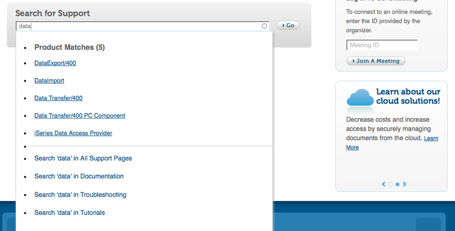

Hi!
I'm Matthew
Web Developer Stereotypes
Designer
Developer
Developer
All Kinds of People
"I want a fancy search box"
Write some code
Search Box
"I want to click on the boxes"
Write some code
Clickable Squares

"The total number of comments is wrong"
Fix Comments
ASCII Fun

These Slides
You're Next!